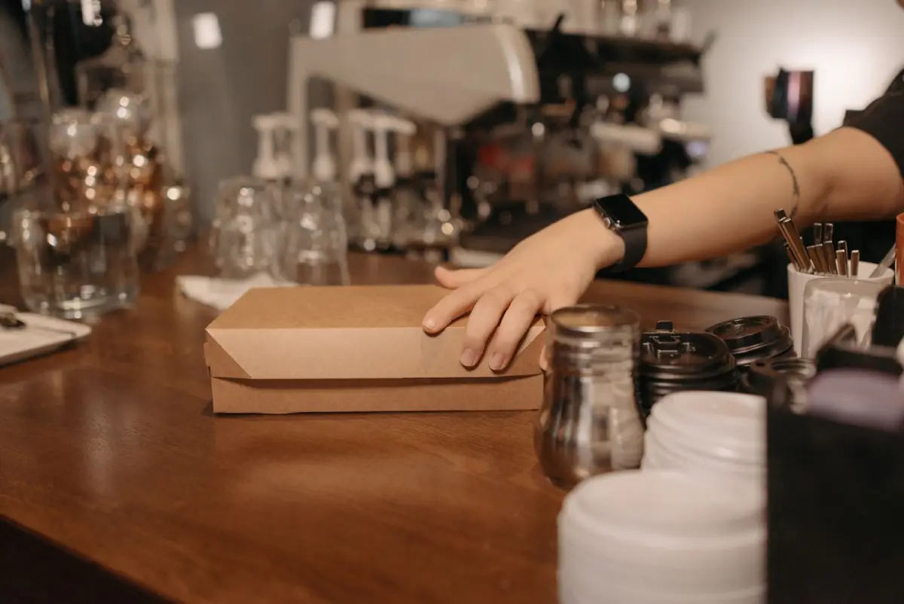

Contact
We horen graag van je
Wilde je eigenlijk eten bestellen? Dat gaat sneller via de bestelpagina; voor al het andere staat hieronder het formulier.
Stuur een bericht
Voor vragen, grote bestellingen of opmerkingen. Je krijgt antwoord van de zaak zelf, meestal dezelfde dag nog.

Hier vind je ons
- Christiaan Huygensweg 133
- 5223 BH 's-Hertogenbosch
- Bij Sonay Supermarkt, vlak bij station Den Bosch-Oost
- Telefoon: 073 302 0033
Wanneer we open zijn
Ma t/m za open van 12.00 tot 22.00 uur
Op feestdagen kunnen de tijden afwijken.
Eerst nog even dit
Is çiğ köfte echt vegan?
Ja. Onze çiğ köfte wordt gemaakt van bulgur, tomaten- en paprikapuree, isot-peper en kruiden, zonder dierlijke producten. Ook de falafel, hummus en granaatappelsaus zijn plantaardig. Let op: içli köfte met gehakt, ayran en de meeste zoetigheid zijn niet vegan.
Is çiğ köfte pittig?
Van zichzelf wel: de isot-peper geeft warmte, en gasten noemen het in reviews "lekker spicy". Liever milder? Zet het bij de opmerkingen van je bestelling, dan kijkt de keuken wat er kan.
Kan ik gewoon binnenlopen zonder te bestellen?
Altijd. We zijn maandag tot en met zaterdag open van 12.00 tot 22.00 uur. Online bestellen is een extra: dan staat je bestelling klaar op de tijd die jij kiest, zonder wachten.
Bezorgen jullie ook?
Ja, kies bij het online bestellen voor bezorgen. Eventuele bezorgkosten en het bezorggebied bevestigen we telefonisch bij je bestelling.
Kan ik online betalen?
Nee, je betaalt bij ontvangst: met pin of contant, aan de balie of aan de deur.
Is alles halal?
Ja, de hele kaart is halal.
Zit er gluten in çiğ köfte?
Ja. Bulgur en lavas brood zijn van tarwe gemaakt, dus çiğ köfte is niet glutenvrij. Heb je een allergie, meld het dan bij je bestelling.
Kan ik groot bestellen voor een feestje?
Ja. Op de kaart staan familiepakketten met 40 stuks çiğ köfte voor € 30,00. Nog groter nodig? Stuur een bericht via het formulier hierboven, dan denken we mee.